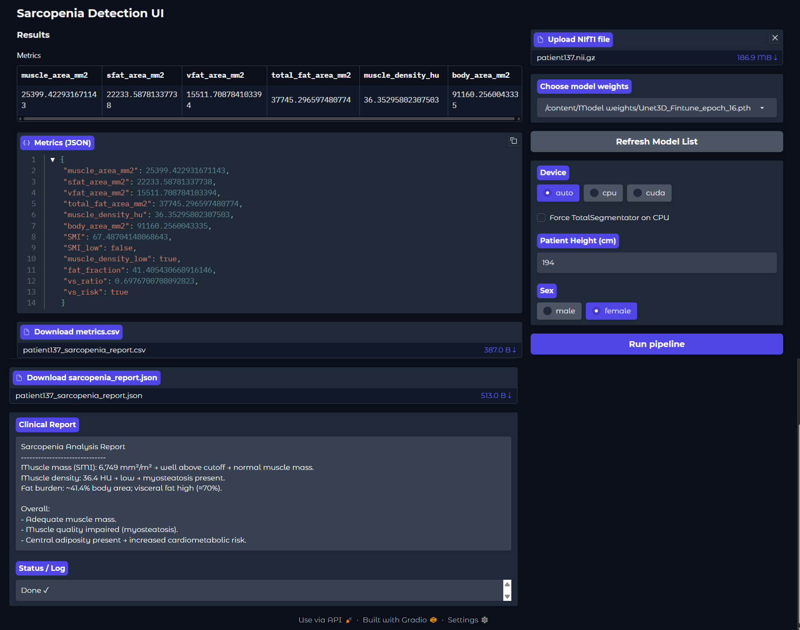
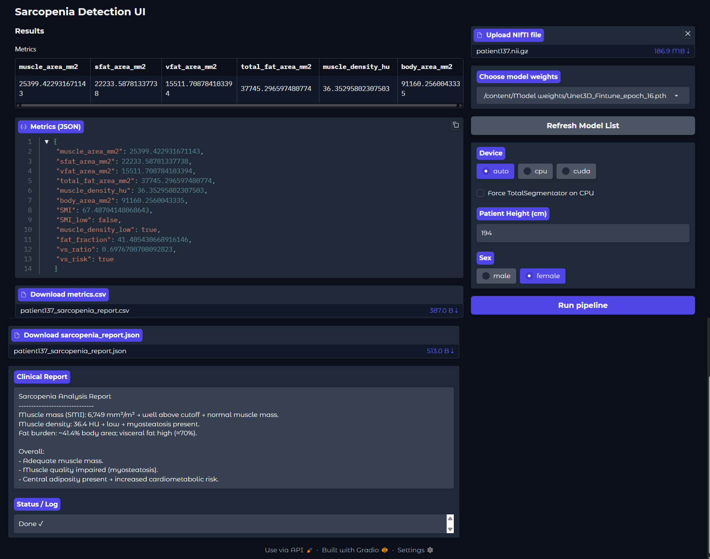

Programming Language
- Python
- R
- SQL
Language
- English
- Hindi
- Marathi
Data Science Enthusiast
Data with purpose: Improving Wellbeing and Protecting the Planet.
I am a Data Science and Analytics professional with hands-on experience turning data into powerful insights and intelligent solutions. With a Master’s degree in Data Science and a foundation in Electronics and Telecommunication, I specialize in data analysis, pre-processing, visualization, and predictive modelling.
I’ve developed machine learning and deep learning models for disease detection, price forecasting, and sales prediction, leveraging cloud platforms such as AWS SageMaker, Amazon S3, and Oracle Cloud to scale and deploy these solutions. Passionate about using AI and analytics to solve real-world problems, I thrive on transforming complex data into actionable strategies that drive business growth and innovation.
Developed an Automated Tool for Sarcopenia Detection. An end-to-end pipeline that locates the L3 slice from the CT volume, extracts, and calculates body compositions to analyze sarcopenia. Co-authored research report “Data Governance - Ethical, Social, Cultural, and Environmental Challenges in Synthetic Media.”
Developed a deep learning model using EfficientNetB3, a convolutional neural network (CNN) architecture, combined with a set of image processing techniques to detect diabetic retinopathy using fundus images.
Collected, cleaned, and prepared datasets for analysis, ensuring data quality and integrity. Conducted exploratory data analysis (EDA) to uncover patterns, trends, and insights from the data
Promoted Techfest events within the college community through various social media, posters, and campaigns. Organized and managed workshops, competitions, and seminars, ensuring smooth execution and high participation. Successfully completed the social media marketing internship as College Ambassador with Silver Medal
 

This project presents a deep learning based pipeline for automatic sarcopenia assessment using abdominal CT scans. The system identifies the L3 vertebra slice, segments key body composition structures, and computes clinically relevant metrics used for sarcopenia screening.
A deep-learning–powered system for classifying gastrointestinal (GI) diseases from endoscopy images. The project includes a complete workflow for dataset preprocessing, model training, evaluation.
An ensemble model ( RandomForest + GradientBoost + XGBoost) that predicts car price based on 12 features, obtained after data preprocessing and feature engineering,
I am open to internships & full time for any Data Role.